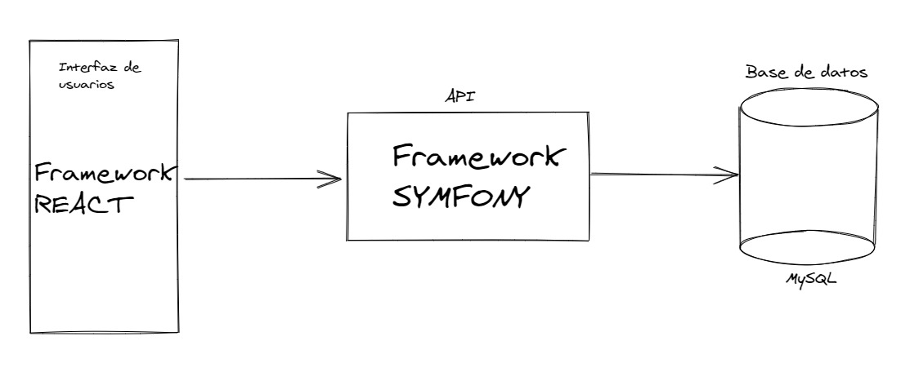
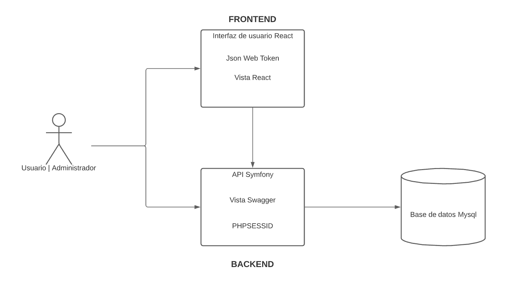
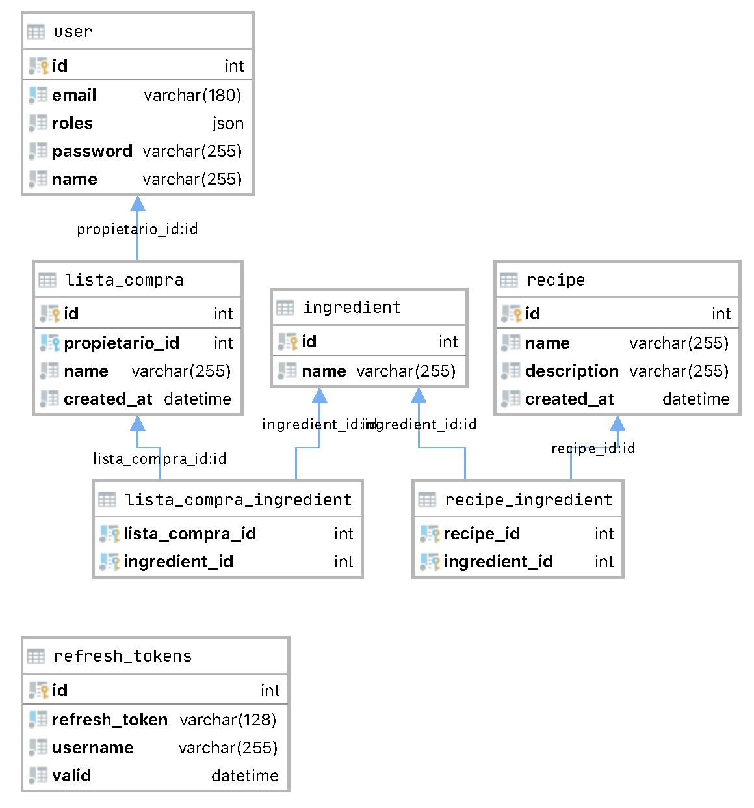

## Recipe-me! --- ## **¿Qué problema resuelve Recipe-me?** #### Recipe-me nos proporciona una lista de la compra creada por nosotros mismos eligiendo las recetas que queremos comer durante la semana. --- ## Lenguajes - Symfony (PHP) - React (JavaScript) --- ## Herramientas - VSCode - Thunder Client(Extensión) - Docker - NPM - Composer --- ## Arquitectura <div class="r-stack">   </div> --- ## Database  --- ## Login <img class="r-stretch" src="../../docs-src/static/login.png"/> --- ## Propuestas de futuro <div class="propuestas"> <ul> <li>Las listas se ordenarán por likes (los usuarios podrán hacer like a las recetas).</li> <li>Las recetas tendrán propietario y estos las podrán editar y eliminar.</li> <li>En la lista podrás tachar lo que has añadido a tu compra para hacer una versión mas realista del post it. </li> <li>El usuario podrá subir su propia foto de perfil editar su información.</li> <li>Las recetas tendrán foto propia y podremos ver la persona que la creó.</li> <li>Crear comunidad de Recipe-Users.</li> </ul> </div> --- ## Reflexión y conclusiones --- Gracias Recipers! ### Frank Palomino, Kevin Rodriguez, Sergi Francés
## Backend [`Symfony require api`](https://api-platform.com/)
## Data access ```php /** * @ApiResource( * normalizationContext={"groups"={"user:read"}}, * denormalizationContext={"groups"={"user:write"}}, * collectionOperations={ * "get"={"security"="is_granted('ROLE_ADMIN')"}, * "post" * }, * itemOperations={ * "get"={"security"="is_granted('ROLE_USER')"}, * "delete"={"security"="is_granted('ROLE_USER') and object == user"} * } * ) * @UniqueEntity(fields={"email"}) * @ORM\Entity(repositoryClass=UserRepository::class) */ ``` --- ## Autenticación y autorización - Json Web Token [Interceptores Axios](#/2/2). - PHPSESSID
## Frontend A paragraph with some text and a [link](http://hakim.se). --- ## Slide 2 --- ## Interceptores Axios [Json Web Token](#/1/2). --- ## Registro --- ## Home --- ## Lista de la compra --- ## Crear receta --- ## Usuario